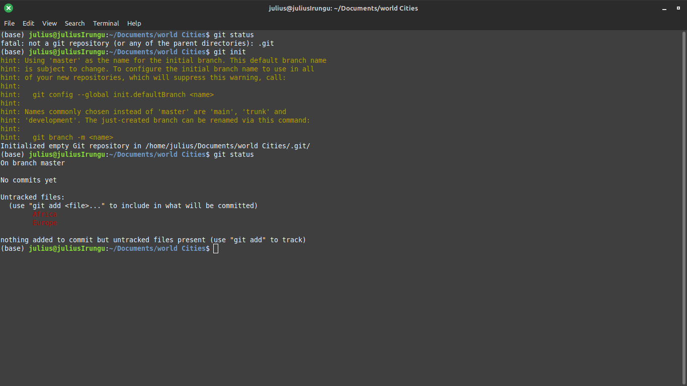

→ Everyday Git
Learn with us: Eat-The-Frog Manenozz BLog. Date 10thMay 2024
→ What is git?
Git is a version control system.A version control system is a software tool that helps to track and manage changes to files, code, documents, and any other types of digital content over time.In software engineering, git helps us to keep track of changes to code. Git is also used to collaborate in code by several software engineers.
While Git is the focus of this blog, there are other version control systems worth mentioning:
- Subversion (SVN): SVN is a centralized version control system that predates Git. It's known for its simplicity and ease of use.
- Mercurial (Hg): Like Git, Mercurial is a distributed version control system. It shares many similarities with Git but has a different underlying architecture. Mercurial is known for its simplicity and intuitive interface.
- Microsoft Team Foundation Version Control (TFVC): TFVC is a centralized version control system developed by Microsoft as part of the Azure DevOps suite. It integrates seamlessly with other Microsoft tools and services.
However, in this blog, we'll delve deeper into Git and its integration with GitHub, a platform for hosting Git repositories and collaborating on projects. Git and GitHub together form a powerful combination that has revolutionized the way software development is done, enabling teams to work together more efficiently and effectively.
→ Installing Git
Checking if Git is Installed:
You can check if Git is installed on your machine by opening a terminal (Command Prompt on Windows, Terminal on macOS and Linux) and type the command git --version

If you have git installed, you should see something like: git version x.y
If not, then you will see an error message that the command is not recognized
Installing Git from web.
If you don’t have git installed, click here to download git from git official website
→ Configuring Git
- After installing git. Open the terminal
- Configure User Name. Set your Git username using the following command
git config --global user.name "Your Name"
- Configure Email Address. Set your Git email address using the following command
git config --global user.email "your_email@example.com"
- Verify Configuration. To verify that you've configured Git correctly, you can use the following commands to display your configured username and email.
git config --global user.name - displays the name
git config --global user.email - displays the email
git config --global --list - displays both the name and email
In our example below we configured our git name to Gakiri001 and email gakirijulius@gmail.com
→ Intializing a Git repository
A git repository is a storage location where GIT version control system manages and stores project’s files and revision history.
- To check if the project contains a git repository, run the command git status, if the project does not contain a git repository, you will get the message “fatal not a git repository…”
- If the project/folder does not contain a git repository, you can initialize/create a repository using the command git init, if a repository is initialized successfully, you will see the text “Initialized an empty git repository in…”
In the example below, I opened my terminal from the WorlsCities folder in my local machine and Intialized
→ Adding files to the staging area
Use the command git status to verify that the file is part of the repo.
You will see your file under untracked files.
Files in your github repository can be in one of the two states: tracked or untracked.
Tracked files: are files that git know about and are added to the repository.
Untracked files: These files are in our working directory and git knows about them but have not been added to the repository.
In the example below, we create a new files called Africa.txt and Europe.txt. And check if they are part of the World cities repository by using git status. We see that Africa.txt and Europe.txt are untracked.

Git Staging Environment
- A staging area is an area where changes to files are prepared before they are committed to repository
- To add a file to the staging environment, use git add filename.
- You can also use git add . to add all the files.
In my example below, I used git add . to add my text files Africa.txt and Europe.txt to the staging area
→ Commiting changes
- A commit in git is a snapshot of changes made to a repository at a particular point in time.Adding commits keeps track of our progress and changes as we work.
- We use git commit –m “commit message” to commit changes to our repository.
- If we want we can view past commits using the git log command.
- We can use git log --oneline if we want a bit more compressed output of git log.
In the example below, I commited the message 'create africa and europe files' and checked the log status afterwards

→ Branches
A branch is a new/separate version of the main repository.Branches allow multiple developers to work on different features, bug fixes, or experiments simultaneously without interfering with each other’s work
Functions of branch
- Isolation of Work: Each branch represents a specific task, feature, or bug fix, allowing developers to work on them independently without interfering with other ongoing work
- Parallel Development: Branches enable parallel development by allowing multiple developers to work on different features or tasks simultaneously.
- Experimentation and Testing: Developers can use branches to experiment with new ideas or approaches without affecting the stability of the main codebase. If an experiment is successful, the changes can be merged into the main codebase.
- Collaboration: Developers can share their branches with others, review each other's code, and collaborate on features or fixes before merging them into the main codebase.
→ Creating a Branches
To create branch, we use the command git branch new-branch-name.
In the example below, I create a branch called Earth-Cities
→ Viewing all branches
- We can view all the branches, using the command git branch
- The branch with a * symbol to its left is the active branch/the branch we are in.
In the example below, Used git branch to view my Branches in the terminal
→ Switching active branches
we can change branches using the command git checkout branch-name
In the example we switched to branch Earth-Cities from the master (World Cities)
→ Merging a branch
- Move to your the branch you want to merge this branch with. In our case the master branch
- We then use the command git merge branch-name to merge that branch.
In the example, i merged the branch Earth-Cities to main branch WorlsCities
→ Deleting a branch
- we can then delete that branch using the command git branch –d branch-name
In the example below, I deleted the branch Earth-Cities
→ Next steps
Next Tool - GitHub:
GitHub is a popular platform for hosting Git repositories and collaborating on projects.
Here's how it works and what users can do next:
- Create a GitHub Account: If you don't have one already, sign up for a GitHub account at github.com.
- Creating Repositories: Learn how to create a new repository on GitHub to host your projects.
- Pushing to GitHub: Once you have a repository set up locally, push your changes to GitHub to make them accessible to others.
- Collaborating with Others: Explore GitHub's collaboration features, such as pull requests, issues, and project boards, to work with teammates on projects.
- Exploring Open Source Projects: Browse GitHub to discover open-source projects, contribute to them, or fork them to start your own version.
Github Home page